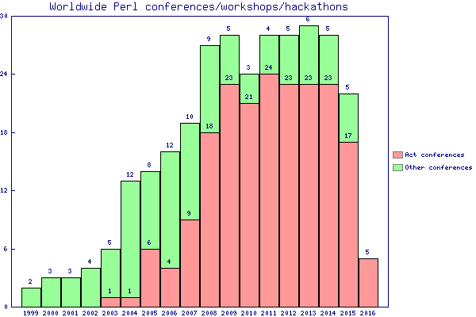

[% META title = 'Act conferences';
WRAPPER ui;
PROCESS html_stuff %]
[% template.title %]
Perl conferences
The following Perl conferences web sites are run using Act,
and hosted on the French Perl mongers Act instance:
(Links will be added as soon as the web sites open)
[% WRAPPER box %]
2010
- YAPC Europe
- YAPC North America
- Belgian Perl Workshop
- Dutch Perl Workshop
- Frozen Perl
- German Perl Workshop
- Bulgarian Perl Workshop
- The Perl Oasis
[% END %]
[% WRAPPER box %]
2009
[% END %]
[% WRAPPER box %]
2008
[% END %]
[% WRAPPER box %]
2007
[% END %]
[% WRAPPER box %]
2006
[% END %]
[% WRAPPER box %]
2005
[% END %]
[% WRAPPER box %]
2004
[% END %]
[% WRAPPER box %]
2003
- YAPC Europe
(ported from the engine that pre-dates Act)
[% END %]
You can see the progress of Act adoption within the Perl community in
the following graph (raw data hosted by the YAPC Europe Foundation):

Other Act conferences
The following conferences are also run using Act, but hosted on other
servers:
[% WRAPPER box %]
2009
[% END %]
[% WRAPPER box %]
2008
[% END ; END %]